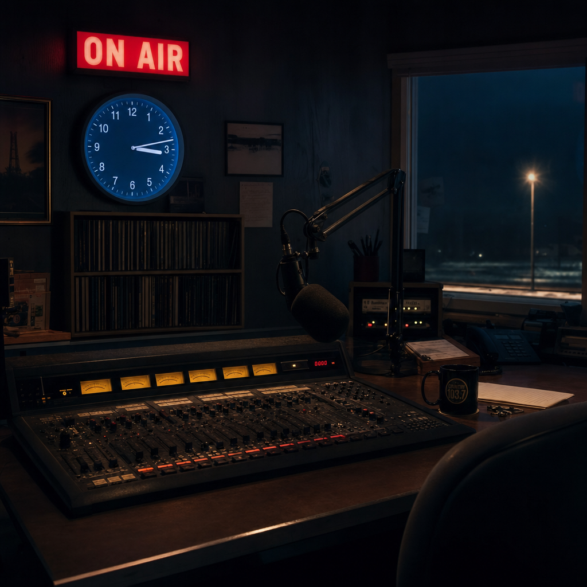
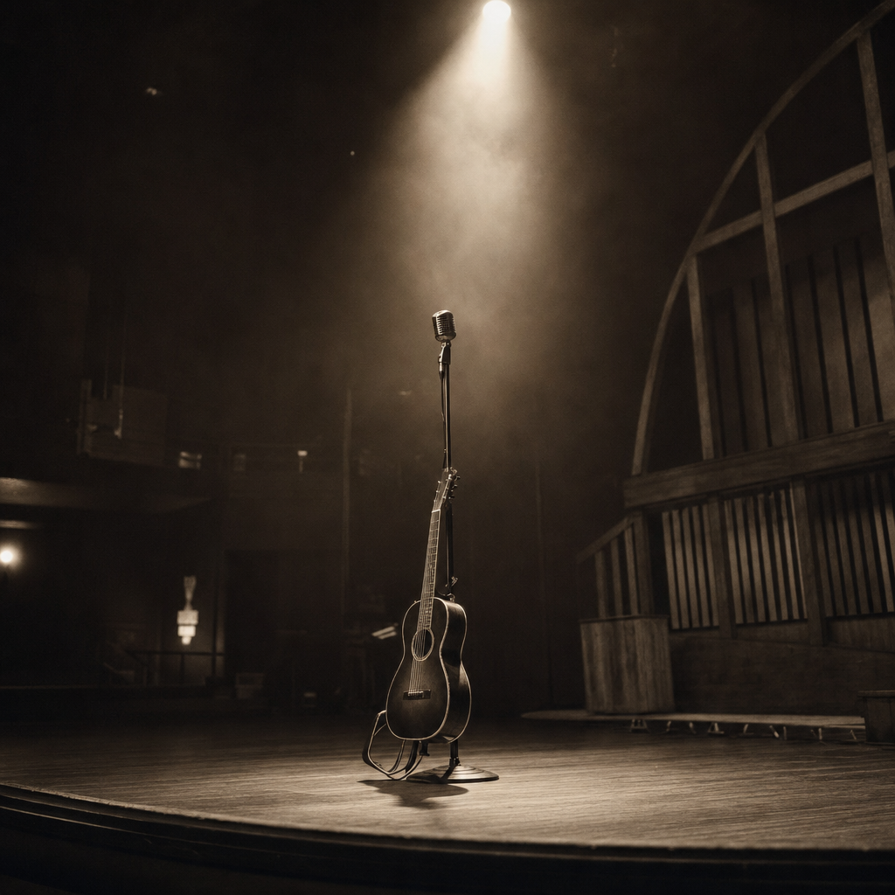

They Won't Play a Lady-O on Country Radio
In 2022, songs by women played back-to-back 928 times across the 29 biggest country stations in America. Songs by men played back-to-back 118,861 times. The math from there is uncomfortable.
In 2022, on the 29 biggest country radio stations in America, songs by women played back-to-back 928 times. Songs by men played back-to-back 118,861 times. Women got 10.1% of all airplay; men got 81.5%. Their back-to-back rates were 0.51% and 65.01%. Men's airplay share is about 8 times women's. Men's back-to-back share is 128 times women's.
In May 2015, a country-radio consultant named Keith Hill told the trade press that programmers should not stack women's songs together. He used a salad analogy: men were the lettuce; women were the tomatoes. Eight years and a thousand op-eds later, the rule he described is still on the air.
At Cincinnati's WUBE-FM, two women's songs followed each other twice. Two times. In 6,221 plays across 19 sampled days. The men's back-to-back rate at the same station was 1,917 times higher.
The asymmetry
The number that should not exist
To check whether the gap is just an arithmetic side effect of women being rarer, The Pudding shuffled each station's 24-hour playlist 1,000 times, with no avoidance rule applied, and asked a simple question: how often does the random shuffle produce a women's back-to-back rate as low as the observed one? At 18 of 29 stations, the answer was never. Across 18,000 randomized days, no shuffle ever drove the women's b2b rate down to where the actual programmers drove it.
The simple back-of-envelope check is even cleaner. If women have an 11% airplay share and slots were random, you would expect a back-to-back rate of about (0.11)² = 1.2% — the chance baseline. Every single station in the sample comes in below that baseline. The median observed-over-expected ratio is 0.51, meaning the typical station runs at half of chance. WUBE-FM runs at 3% of chance. The pattern is not under-representation. It is under-representation plus active separation.
Every dot below the diagonal
Of the 29 stations in this sample, what fraction of plays do you think were two women's songs in a row?
Quarantine, not absence
Inside the day, women's plays are not spread across the dayparts evenly. 33% of all women's plays in the 2022 sample fall in overnight hours — midnight to 6 a.m. — when listenership is at its weekly low. Another 21% fall in the evening. The morning drive (6-10 a.m.) and afternoon drive (3-7 p.m.), where ratings and ad rates peak, hold only 12% and 15% of women's plays.
When women DO get back-to-backed, the lopsidedness gets sharper. Of the 928 women's back-to-back pairs in the sample, 43% landed in overnights and another 21% in evenings — 63% of women's b2bs concentrated in the slots almost no one is listening. Afternoon drive, the most valuable hour of the day for ad sales, holds 9% of women's b2bs.
The rule is not "play fewer women." The rule is "play them where it doesn't show."
Where women's back-to-backs land in the day

A category of one
If you narrow the lens from "women" to "women of color," the pattern stops being a percentage and starts being a list. Five women of color received plays in the entire 2022 sample: Tiera Kennedy (13 plays), Runaway June (11), Gloria Estefan, Whitney Houston, and Loretta Lynn (one play each). 21 of the 29 stations played zero women of color in 2022. None of the five appeared back-to-back with another woman of color anywhere in the dataset. The most-cited Black woman in country music in the last five years — Mickey Guyton — does not appear in the 2022 logs from these 29 stations at all.
- Tiera Kennedy13 plays
- Runaway June11 plays
- Gloria Estefan1 play
- Whitney Houston1 play
- Loretta Lynn1 play
LGBTQ+ artists fared similarly. They received 0.17% of all airplay — 318 plays out of 182,848 — and one back-to-back pair across the entire sample. One.
Mickey Guyton's "Black Like Me" was nominated for a Grammy. She performed her song "What Are You Gonna Tell Her" at the Country Radio Seminar in 2020, in front of the people who decide what plays. The 0.03% number for Black women's airplay in The Pudding's full 156-station data is the format's answer to that song.
Three women, thirty-two careers
Among "current" songs in the 2022 sample — the active-promotion bucket where new artists earn their careers — there are 35 unique women artists. The top three of them, Gabby Barrett, Kelsea Ballerini, and Lainey Wilson, account for 52.2% of all current-women plays. The top three current men account for 20.3% of current-men plays — across a roster of 158 artists. Women's path through country radio in 2022 is not a roster, it is a bottleneck.
When women DO get back-to-backed, the pairs are usually safe — Recurrent or Gold tracks, not Current ones. 33% of women's back-to-backs are Gold (older hits like "Before He Cheats"); 45% Recurrent; only 22% Current. Two new women's songs in a row remains rare even when the rule is bent.
Top 10 'current' artists, side by side
Thirty percent of days, zero
Collapse the 2022 sample to station-days — 29 stations × 19 dates each — and you get 551 single-day playlists. 166 of them, 30.1%, contain zero back-to-back women's pairs. In a 24-hour broadcast day, on a country station, in 2022, the most common outcome is no back-to-back women at all.
The most striking single day in the dataset is January 28, 2022 at WSM-FM in Nashville — the legendary station that hosts the Grand Ole Opry. WSM played 53 women's songs that day, 15.6% of its airtime. Zero of them were back-to-back.
Across all 29 stations, the floor is WUBE-FM Cincinnati at 0.032%; the ceiling is KKGO-FM Los Angeles at 1.27% — and KKGO is an independent station, the only sample that even touches the chance baseline. The other 28 stations live in a 0.03-1.0% band that no random shuffle would produce.
All 29 stations, ranked
What the rule costs

Women's share of country airplay was 33.1% in 1999. By 2015 it was 11.4% — the year of Hill's "tomato" comment. By 2022 it averaged about 11% on the 156 Mediabase-tracked stations. The trajectory is a half-century slope, with a near-floor at the bottom of it.
Country radio is not just a listening choice. It is the gate that controls chart position, label promotion budgets, festival booking, award eligibility, and tour revenue. When women receive a tenth of airplay and a hundred-and-twenty-eighth of back-to-back airplay, every downstream system inherits that floor. Brandi Carlile's response to the Pudding piece was less a critique than a question to the format: what does that say to a 10-year-old girl about life?
The 35 women in the 2022 current rotation are not the bench of country music. They are the entire active careers the format is willing to invest in. Three of them carry the load. The other 32 are the tomatoes — and the salad is mostly lettuce.
References
- Original article: Jada Watson and Jan Diehm, "They Won't Play a Lady-O on Country Radio: Examining Back-to-Back Plays by Gender, Race, and Sexual Orientation," The Pudding, May 2023.
- Data: 2022 Mediabase 24-hour radio logs from 29 large-market US country stations, 19 sampled dates. The Pudding data repository (country-radio-data).
- Long-run airplay history: Jada Watson, "Gender Representation on Country Format Radio," SongData, April 2019.
- Tomato-gate context: Tomato-gate (Wikipedia); Country Aircheck, May 2015.
- Coverage: Billboard, May 2023, "Country Radio Plays Women Artists Back-to-Back Less Than 1% of Time."
- Tools: Vega-Lite 5 (charts), vanilla JS (interactive), Spotify oEmbed (audio embeds).